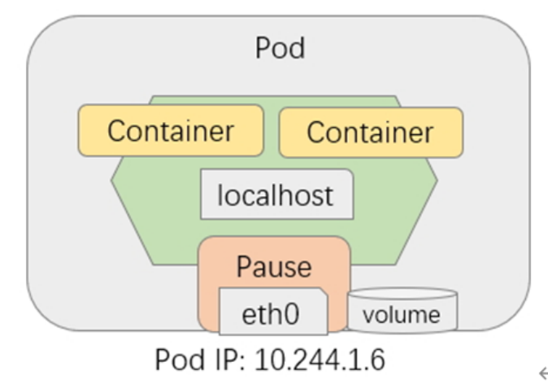
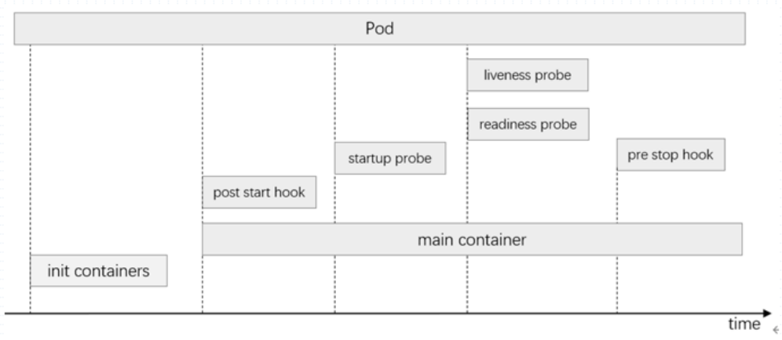

Pod就是共享Network名称空间，IPC名称空间，UTS名称空间的一组容器。在Pod的底层还存在一个基础设施容器Pause。

Pause的主要作用是用来提供存储卷和名称空间。
Pod的生命周期
1
2
3
4
5
6
| root@k8s-master01:~
NAME READY STATUS RESTARTS AGE
demoapp-5f7d8f9847-jrfm6 1/1 Running 0 40h
demoapp-5f7d8f9847-r7h7b 1/1 Running 0 37h
demoapp-5f7d8f9847-v7ft8 1/1 Running 0 40h
mypod 1/1 Running 0 18h
|
在使用kubectl get pods时，其中的status信息，又称为pod的相位。一个pod的相位共有5种相位：
- Running：运行状态
- Pending：挂起状态（未调度成功，或仍处于下载镜像过程中）
- Succeeded：成功终止。一般出现在Job中。
- Failed：未成功终止。
- Unknown：未知。kubelet没有报告pod的健康状况。表示apiserver无法获取到pod的健康状态信息。通常由于其无法和所在节点的kubelet进行通信所导致。
其他状态信息：
以上2中信息并非pod的相位，而是pod内部容器的状态。一般出现在容器内部未运行在前台，或者容器内的端口被占用等等情况。
Pod运行逻辑
Pod内可以存在多个容器，常用设计模式：
- SideCar：为主容器提供辅助功能
- Adapter：若某个pod内数据输出格式与某个规定的引用接受数据的格式不兼容，用适配器来将其转换以达到兼容的目的
- Ambassador：主容器中的引用不方便对外联络，可以专门制作一个容器来实现对外联络的功能。如redis集群联络其他节点可以专门做一个大使来进行联络。
Pod内容器启动顺序

Pod内容器启动时，先启动的为init containers(初始化容器)，初始化任务结束后容器推出结束。而后运行主容器，主容器之后还存在SideCar、Adapter、Ambassador等等容器，这些容器并行启动，先后将顺序无法控制。
在Pod运行时还存在2个钩子和3个探针，这些钩子允许人为的在某个时刻运行一些自定义的功能：
- pod start hook：在主容器启动完毕后运行
- pre stop hook：在主容器运行结束前运行
- startup probe：启动探针，
- liveness probe：存活探针，用来判断容器健康与否。
- readiness probe：就绪探针，用来判断容器内应用是否就绪。
Pod启动时其内部的所有容器都可以存在此3个探针，2个钩子，并且探针进行周期性的探测。
Pod资源规范
1
2
3
4
5
6
7
8
9
10
11
12
13
14
15
16
17
18
19
20
21
22
23
24
25
26
27
28
29
| apiVersion: v1
kind: Pod
metadata: {…}
spec:
securityContext:
runAsUser <integer>
runAsGroup <integer>
supplementalGroups <[]integer>
fsGroup <integer>
runAsNonRoot <boolean>
seLinuxOptions <Object>
sysctls <[]Object>
windowsOptions <Object>
containers:
- name: …
image: …
securityContext:
runAsUser <integer>
runAsGroup <integer>
runAsNonRoot <boolean>
allowPrivilegeEscalation <boolean>
capabilities <Object>
add <[]string>
drop <[]string>
privileged <boolean>
procMount <string>
readOnlyRootFilesystem <boolean>
seLinuxOptions <Object>
windowsOptions <Object>
|
Podd的简单yaml配置
1.定义一个pod的yaml
1
2
3
4
5
6
7
8
9
10
11
| apiVersion: v1
kind: Pod
metadata:
name: mypod
labels:
app: mypod
release: canary
spec:
containers:
- name: demoapp
image: ikubernetes/demoapp:v1.0
|
2.创建Pod
1
2
3
4
5
6
7
8
9
10
11
12
13
14
15
16
17
| root@k8s-master01:~/yaml/chapter01
pod/mypod created
root@k8s-master01:~/yaml/chapter01
NAME READY STATUS RESTARTS AGE
demoapp-5f7d8f9847-jrfm6 1/1 Running 0 22h
demoapp-5f7d8f9847-r7h7b 1/1 Running 0 19h
demoapp-5f7d8f9847-v7ft8 1/1 Running 0 22h
mypod 1/1 Running 0 46s
root@k8s-master01:~/yaml/chapter01
NAME READY STATUS RESTARTS AGE IP NODE NOMINATED NODE READINESS GATES LABELS
mypod 1/1 Running 0 3m52s 10.244.2.13 k8s-node02 <none> <none> app=mypod,release=canary
|
3.以yaml格式来显示Pod
1
2
3
4
5
6
7
8
9
10
11
12
13
14
15
16
17
18
19
20
21
22
23
24
25
26
27
28
29
30
31
32
33
34
35
36
37
38
39
40
41
42
43
44
45
46
47
48
49
50
51
52
53
54
55
56
57
58
59
60
61
62
63
64
65
66
67
68
69
70
71
72
73
74
75
76
77
78
79
80
81
82
83
84
85
86
87
88
89
90
91
92
93
94
95
96
97
98
99
100
| root@k8s-master01:~/yaml/chapter01
apiVersion: v1
kind: Pod
metadata:
creationTimestamp: "2021-06-29T09:30:06Z"
labels:
app: mypod
release: canary
name: mypod
namespace: default
resourceVersion: "146436"
uid: cb1f9543-5927-4517-93e6-c120b8824165
spec:
containers:
- image: ikubernetes/demoapp:v1.0
imagePullPolicy: IfNotPresent
name: demoapp
resources: {}
terminationMessagePath: /dev/termination-log
terminationMessagePolicy: File
volumeMounts:
- mountPath: /var/run/secrets/kubernetes.io/serviceaccount
name: kube-api-access-hbs44
readOnly: true
dnsPolicy: ClusterFirst
enableServiceLinks: true
nodeName: k8s-node02
preemptionPolicy: PreemptLowerPriority
priority: 0
restartPolicy: Always
schedulerName: default-scheduler
securityContext: {}
serviceAccount: default
serviceAccountName: default
terminationGracePeriodSeconds: 30
tolerations:
- effect: NoExecute
key: node.kubernetes.io/not-ready
operator: Exists
tolerationSeconds: 300
- effect: NoExecute
key: node.kubernetes.io/unreachable
operator: Exists
tolerationSeconds: 300
volumes:
- name: kube-api-access-hbs44
projected:
defaultMode: 420
sources:
- serviceAccountToken:
expirationSeconds: 3607
path: token
- configMap:
items:
- key: ca.crt
path: ca.crt
name: kube-root-ca.crt
- downwardAPI:
items:
- fieldRef:
apiVersion: v1
fieldPath: metadata.namespace
path: namespace
status:
conditions:
- lastProbeTime: null
lastTransitionTime: "2021-06-29T09:30:06Z"
status: "True"
type: Initialized
- lastProbeTime: null
lastTransitionTime: "2021-06-29T09:30:10Z"
status: "True"
type: Ready
- lastProbeTime: null
lastTransitionTime: "2021-06-29T09:30:10Z"
status: "True"
type: ContainersReady
- lastProbeTime: null
lastTransitionTime: "2021-06-29T09:30:06Z"
status: "True"
type: PodScheduled
containerStatuses:
- containerID: docker://be93c1053049f1c98ccd7b3c3b1083edf35093ba0a4c916cd3445440ffee928f
image: ikubernetes/demoapp:v1.0
imageID: docker-pullable://ikubernetes/demoapp@sha256:6698b205eb18fb0171398927f3a35fe27676c6bf5757ef57a35a4b055badf2c3
lastState: {}
name: demoapp
ready: true
restartCount: 0
started: true
state:
running:
startedAt: "2021-06-29T09:30:09Z"
hostIP: 172.16.11.82
phase: Running
podIP: 10.244.2.13
podIPs:
- ip: 10.244.2.13
qosClass: BestEffort
startTime: "2021-06-29T09:30:06Z"
|
4.打印Pod详细描述信息
1
2
3
4
5
6
7
8
9
10
11
12
13
14
15
16
17
18
19
20
21
22
23
24
25
26
27
28
29
30
31
32
33
34
35
36
37
38
39
40
41
42
43
44
45
46
| root@k8s-master01:~
Name: mypod
Namespace: default
Priority: 0
Node: k8s-node02/172.16.11.82
Start Time: Tue, 29 Jun 2021 09:30:06 +0000
Labels: app=mypod
release=canary
Annotations: <none>
Status: Running
IP: 10.244.2.13
IPs:
IP: 10.244.2.13
Containers:
demoapp:
Container ID: docker://be93c1053049f1c98ccd7b3c3b1083edf35093ba0a4c916cd3445440ffee928f
Image: ikubernetes/demoapp:v1.0
Image ID: docker-pullable://ikubernetes/demoapp@sha256:6698b205eb18fb0171398927f3a35fe27676c6bf5757ef57a35a4b055badf2c3
Port: <none>
Host Port: <none>
State: Running
Started: Tue, 29 Jun 2021 09:30:09 +0000
Ready: True
Restart Count: 0
Environment: <none>
Mounts:
/var/run/secrets/kubernetes.io/serviceaccount from kube-api-access-hbs44 (ro)
Conditions:
Type Status
Initialized True
Ready True
ContainersReady True
PodScheduled True
Volumes:
kube-api-access-hbs44:
Type: Projected (a volume that contains injected data from multiple sources)
TokenExpirationSeconds: 3607
ConfigMapName: kube-root-ca.crt
ConfigMapOptional: <nil>
DownwardAPI: true
QoS Class: BestEffort
Node-Selectors: <none>
Tolerations: node.kubernetes.io/not-ready:NoExecute op=Exists for 300s
node.kubernetes.io/unreachable:NoExecute op=Exists for 300s
Events: <none>
|